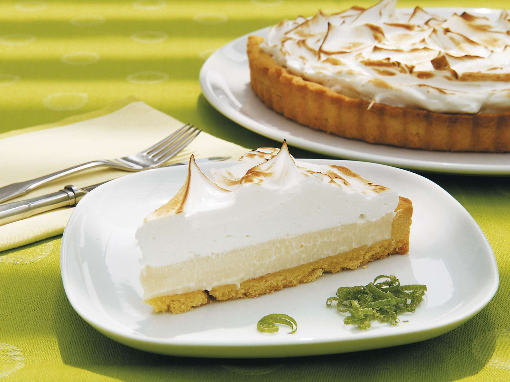
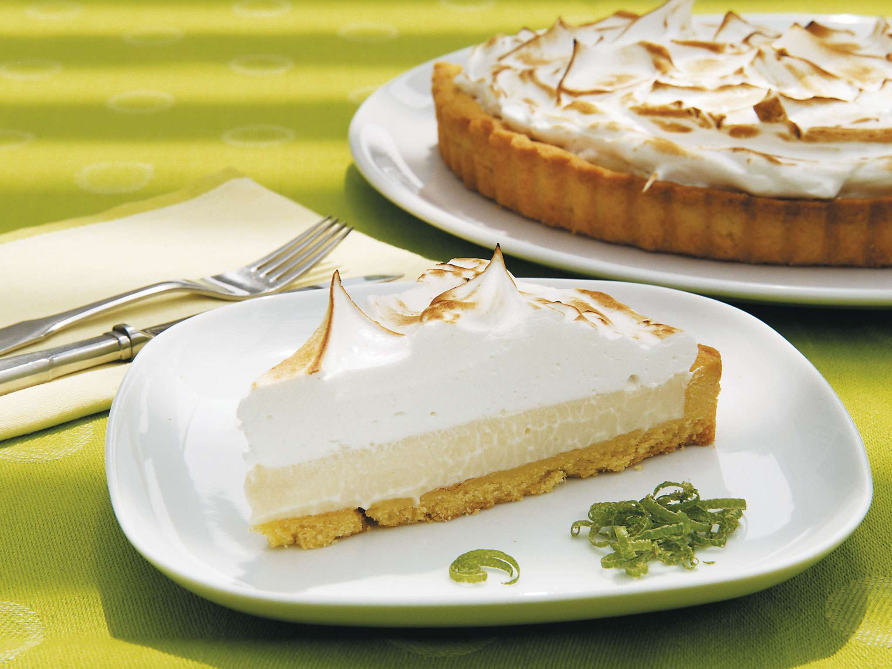

Pie
¿Que es?
El pie es uno de los postres más reconocidos en todo el mundo. Según los historiadores el pie es un postre de origen inglés consumido desde la edad media en los banquetes ofrecidos por la reina Isabel. El más famoso es el pie de limón.
Receta del día
Pie de manzana
Esta es una de las recetas mas prácticas, sencillas y deliciosas que puenden hacerse. Para empezar haremos la masa de nuestro pie; para esto necesitaremos incorporar nuestra harina de trigo tamizada, el azucar y sal. Posteriormente se añade la mantequilla fría cortada en tubitos y se mezcla con el resto de la mezcla (puede ser a mano o con la batidora, lo importante es que la mantequilla no se desintegre por completo). En este punto se agrega el agua y el vinagra de manzana o frutos (si no tienes ninguno de estos tipos de vinagre lo puedes remplazar por la misma cantidad de agua) y se integra todo deteniendose un poco antes de que se integre por completo.Dividiremos nuestra masa en dos partes iguales, las envolveremos en papel vinipel y las dejaremos conservando en la nevera por lo menos 2 horas.

 


Para el relleno necisitamos picar las manzanas finamente y dejarlas conservar con el zumo de limon por unos 20 minutos. posteriormente agregamos la nuez moscada, la canela y el azucar (si prefieres puedes tambien agregarle 1/cdta de gengibre en polvo o 1cda de maizena que le da un poco de más textura). Dejas reposar mientras estiras la masa, la pones en tú molde para pies y inchas con un tenedor la base de tu masa. Después de tener el molde listo con la masa agregas tu relleno y con la masa que te queda puedes hacer tiras y entrecruzarlas para la decoración superior, si haces esto tienes que pintar la masa con una mezcla de huevo y leche. Lo llevas al horno por aproximadamente una hora a 190 grados.